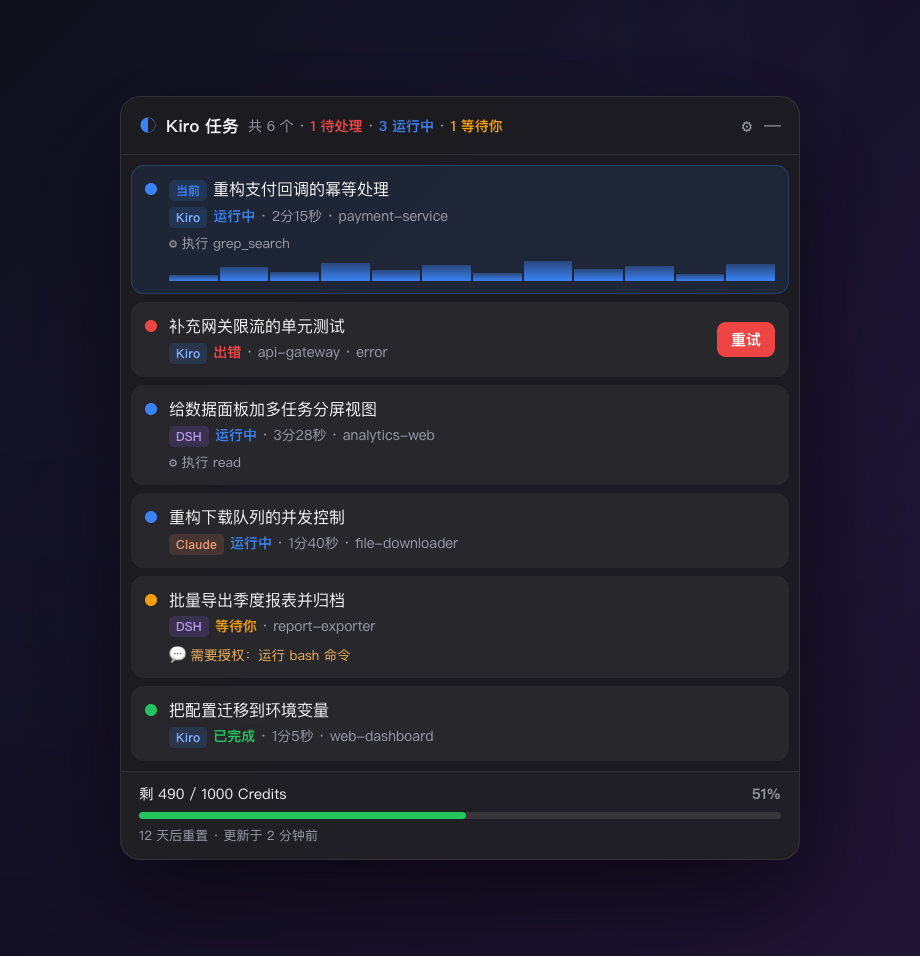

Kiro 任务跑得久，你不盯着就不知道它何时完成、何时出错停下。 这个桌面浮窗替你盯着所有会话：出错弹提示 + 一键重试，完成即时通知。

跨所有工作区，一个浮窗看清全部会话状态
任务跑完立刻弹通知，不用反复切回去看它好了没。
会话因报错停下时高亮告警，点一下就把「继续」发回对应窗口。
运行中却长时间无动静，判定疑似卡住并提醒，避免白等。
同时监控多个 Kiro 窗口/工作区的所有会话，一屏尽览。
仅读取本地会话记录推导状态，绝不修改 Kiro 的任何数据。
已签名公证，启动自动检查新版、后台下载、退出时静默安装。
每个会话一行，颜色即状态
不依赖任何 Kiro 内部接口
工具只读本地的 Kiro 会话记录（~/.kiro/sessions）：从 session.json
拿标题、工作区与状态，从 messages.jsonl 的事件流（turn_end.stopReason、
pending_interaction）推导每个会话是运行中、已完成，还是出错需要重试。
一键重试：把对应工作区的 Kiro 窗口切到前台，按 ⌘L 聚焦聊天输入框，
自动粘贴「继续」并回车——省去你手动找窗口、敲字。
全程无需命令行
点上方按钮下载最新的 .dmg（universal，通用于 Apple Silicon 与 Intel）。
双击 dmg，把「Kiro 任务监控」拖进「应用程序」。
启动后浮窗停在桌面右上角，菜单栏出现 K 图标。已公证，双击直开。